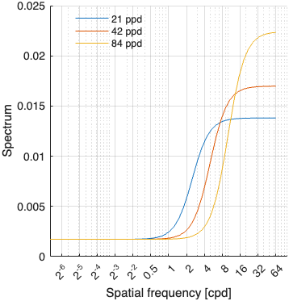
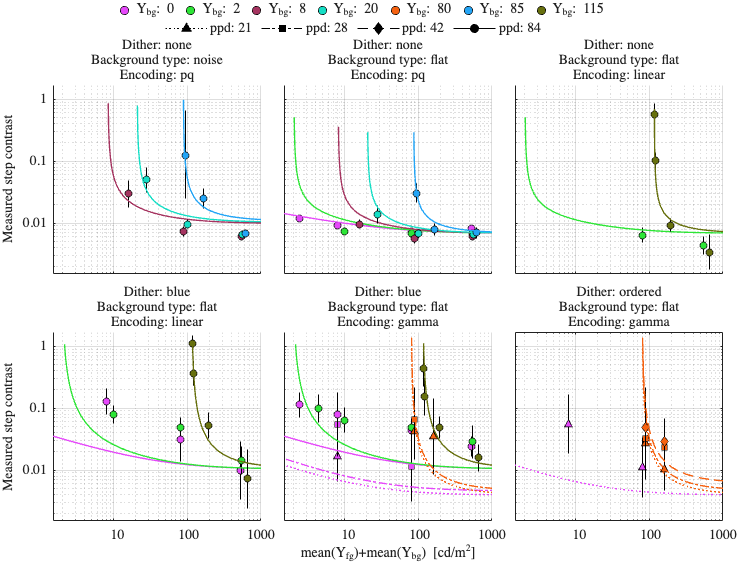
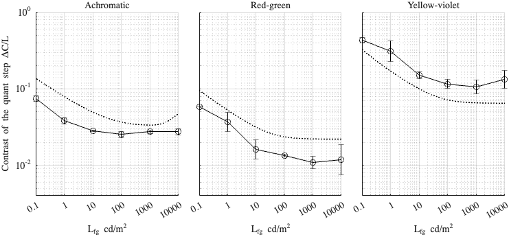

Fitting config: dither_spd, model: daly_masking
Fitting error (RMSE): 0.318064
Model parameters
p.beta = 1.10416; p.gs_num = [ 0.517692 0.197695 0.963703 ]; p.noise_params = [ 0.362202 0.506649 0.513283 ]; p.dither_amp_params = [ 0.848579 0.807155 ]; p.blue_dither_params = [ 0.119004 3.02292 0.0017237 0.225199 ];
Model components
Blue noise dither spectrum

Dataset: [ar2025]
Scaling factor: 0.559024

Dataset: [kim2020]
Scaling factor: 1.39624
